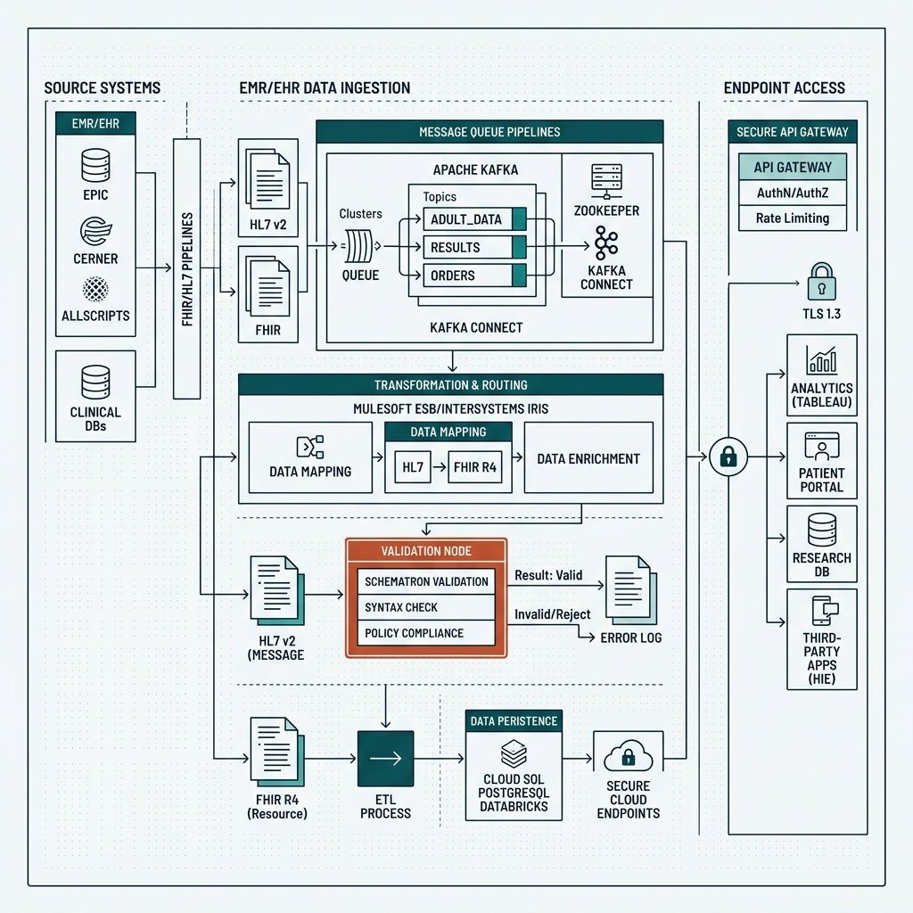

Connecting Epic, Cerner, Athenahealth, lab platforms, and custom healthcare portals requires more than just webhook forwarding. Veridata Pro engineers HIPAA-compliant data layers with strict schema validation, end-to-end encryption, and full message observability.
We implement secure, auditable pipelines using HL7/FHIR, AWS HIPAA-compliant stacks, Mirth Connect, and secure API integrations.
Book a free integration review
Healthcare integrations require resilient, deterministic architectures. When patient data, lab results, or billing cycles break, manual workarounds cost valuable clinical time and introduce risk.
Clinicians and administrative staff waste hours copying history, demographics, or appointment slots manually between disconnected patient portals.
Dropped HL7 ADT messages or failed FHIR queries cause scheduling gaps, wrong billing statements, and operational friction between clinics and diagnostic labs.
No-code connections and quick scripts fail to provide Business Associate Agreements (BAA), end-to-end encryption, or detailed audit trails required under HIPAA.
We bridge the gap between enterprise medical software and modern web applications, ensuring every data flow is fully validated, secure, and compliant.
Bidirectional data syncing between systems like Epic, Cerner, Athenahealth, and your custom apps, CRMs, or operational portals.
Real-time clinical data mapping, translation, and validation of HL7 v2/v3 messages and FHIR R4 resources.
Deploying secure cloud environments on AWS with encryption-at-rest/in-transit, IAM controls, and detailed audit trails.
Scaffolding, optimizing, and monitoring Mirth Connect/NextGen Connect interface engines for reliable message routing and translation.
Connecting patient scheduling, billing workflows, and telemedicine systems directly with the core clinical database.
Synchronizing diagnostic requests and lab result deliveries directly with EMR systems, eliminating manual PDF transfers.
| Need | What Veridata Pro delivers |
|---|---|
| You need to connect a modern web app or CRM to a legacy EMR/EHR (Epic, Cerner, Athenahealth). | Custom API integration, middleware routing, or secure interface engine setup tailored to clinical schemas. |
| Clinical messages (HL7/FHIR) need translation and parsing to custom JSON endpoints. | Reliable ETL workflows, real-time message translation (HL7 to FHIR, FHIR to custom API), and schema validation. |
| Systems must comply with HIPAA, require end-to-end encryption, and detailed audit logs. | Audit trail configurations, AWS/cloud environments built under BAA, encrypted databases, and secure token management. |
| You need ongoing ownership and monitoring for critical patient data flows. | Continuous monitoring, proactive alert triggers, and immediate break-fix support under our Critical Integration Support SLA. |
We keep your live integrations monitored and fixed before they become your problem. Critical Integration Support →
We will review the data model, map the API constraints, and design the secure layer your clinical team can actually rely on.
Book a free integration review